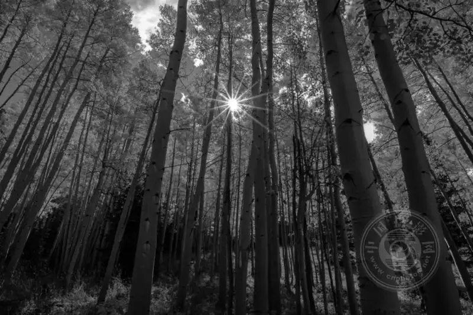
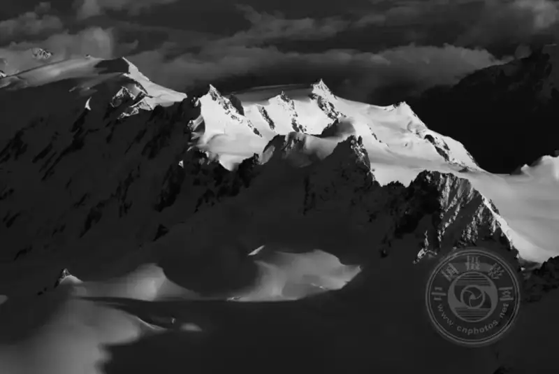

Published: 2022-12-19
Source link: https://www.cnphotos.net/academy/show-106.html
Even for the same subject, what separates a good photo from a bad one? It is hard. If I knew, I would never delete a photo again. But I found one idea that helps answer it: unity.
Unity means putting all the elements of a photo in the same mood, so the feelings they express line up as much as possible.
It is a bit like the simple idea in photography of dropping what you do not need. You would not put a distracting element, like an ugly piece of trash, in the middle of a landscape. Instead, you look for feelings that fight each other and move them so they complement one another.
It is easier to explain with examples. Look at the two photos below. They are the same photo in two different post-processing styles:

I asked many photographers which they liked better, and so far they all chose the first. I agree.
But why?
This does not mean a high-contrast, dark, monochrome treatment is wrong. It is one of my favorite processing styles, in my own photos and in the photos I love by other photographers. But it does not work here, and I think it breaks the whole mood of the photo.
In the real world, the poplar in front of me was bright and yellow, perhaps the most upbeat and sunny color, and very inviting. By contrast, the monochrome treatment tries to send a strong, mysterious feeling. Neither is bad in photography, but in this photo, they are completely split from the feeling of the subject.
So how do you steer the emotional message of a photo the way you want? There are many ways. You can change the light, the processing, the subject, or the framing. Even camera settings and gear play a part.
My point is that one of the best ways to make a good photo is to make sure the emotional message of each element is unified. Soft, low-contrast light can support a calm, peaceful subject. A balanced framing of the same scene continues the mood. If you do this, the result is far stronger than a photo that spills mixed feelings at random.
Here is an incomplete list of the factors in photography that shape the overall emotional message:
1. Quality of light: low or high contrast, dark or bright, color, and which colors, or monochrome. Whatever light you choose, or wait for if it is natural light, has a huge effect on the emotional message.
2. Subject: consider the difference between a rugged rocky peak and a soft grassy hill. Name the adjectives you use for each subject. Those adjectives are the emotional message the subject sends. In portrait or wildlife photography, the subject's own mood is the main factor, such as whether it looks happy or sad.
3. Balance: a balanced photo is calm, composed, and still. An unbalanced photo is tense, messy, and jumpy.
4. Space: a photo with lots of busy space feels crowded and hectic. A photo with lots of negative space feels lonely and empty.
5. Structure: imagine three people huddled together, or three people far apart, or two people together and one person alone to the side. Each arrangement has its own feeling. The same applies to shapes such as circles and triangles.
6. Texture: a gentle texture gives a gentle feeling, and a rough texture gives a rough feeling. The feeling a texture sends is almost always like the adjectives you use to describe it (and the same is true of your subject).
7. Other processing, camera settings, and framing choices: there are many more ways to change the emotional message. In post, you can crop and tone parts of the photo to stress or soften them. With camera settings, a long or fast exposure changes the character of the subject (for example, blurred or sharp). Even gear plays a part, such as a soft-focus filter on the lens.
The point is that the elements of a photo should tell the same story as much as possible. You can turn the emotional message of all the elements into an energetic photo, a gloomy photo, an empty photo, a lively photo, or almost any other mood you think of. The more unified the message, the clearer and more effective the photo.
For example:
On a stormy night, I stood on the shore of the Arctic Ocean. Before me was a jagged piece of ice washed ashore, and behind me an angry sea. I placed the ice slightly off center, then waited for a dark, high-contrast light (the same tone as the subject, even more unified). With all the elements together, the whole emotional message of the photo is unified.
Now the photo below. It has a very similar subject, but it is not a unified photo:
Though the ice in both photos is similar, the second is far weaker. The soft light in the sky and the centered, balanced framing send a soft, still feeling, which is wrong for such cold ice. The message is simply not in sync.
So how do we unify the emotional message? You can use a checklist to review the feeling of each element. For example, contrast, highlights and shadows, the balance of the frame, the subject, and the texture of the main object. List them on paper and check each one.
Of course we cannot carry a checklist outdoors, but we must think about these things before we shoot. Consider light, balance, space, and texture, so each element pushes the emotional message in the direction I want. If an element will not unify, try changing the subject to make them align.
This may sound time-consuming, but even in sports and wildlife photography, where the subject changes fast, unify the emotional message as much as you can. Maybe move where you stand, so the color of the background tells the story of your subject. Or move closer to the main subject, because you would not like the empty, negative-space feeling of a subject shrunk small.
You may think this is easy in the studio but almost impossible for architecture or landscape, where we have less control over the subject. But the truth is, you can always walk around, look for a different angle, wait for the light to change, move closer or farther, and do countless other things. Though you cannot move a mountain, think of other ways to change how the mountain looks in the photo (see Vaclav Bacovsky's photos of the extinct volcano Trosky on Photography Life a few years ago).

Whether you are a pro or an amateur, your photos are almost always better when the emotional message is unified.
Of course, a unified message is not the only factor in a good photo. You still need a reason for the photo to matter, such as an interesting subject or moment. But once you have that, unifying the feeling of the rest is a good way to make the photo better and stronger.
As a basic idea in photography, the more problems you remove from a photo, the better it gets. When you solve them by unifying the light, framing, and subject, you will clearly see the quality of the photo rise.